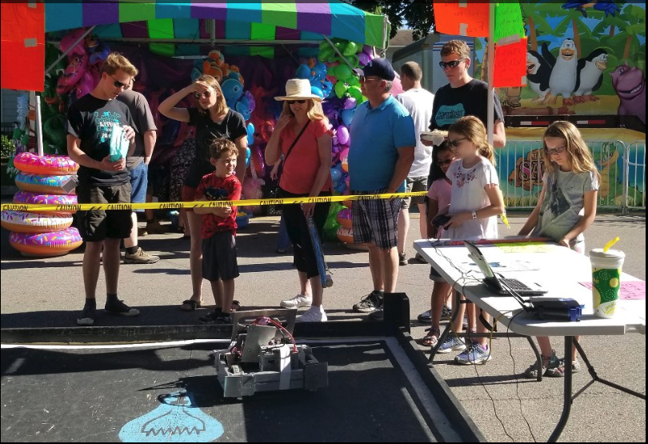

The team’s second outreach method is from Granville Robotics are the sumo bots. The sumo bots serve a dual purpose, to show the general public amazing robots to get them involved in STEM programs themselves, and to let the members of the teams form their own groups and compete to see who can make the best bot! The robots are built in the off-season after FRC while things are cooling off after a very intense season. The robots are built by groups of members from both INSPIRE Robotics and Missing Parts that form their own smaller groups. Each robot is built to the specifications in the teams’ sumo bots manual. The manual can be read at this link. These robots are a lot of fun for the members of each team to build and for people around the community to drive, so someday we hope to make the sumo competition wider than just with the Granville Robotics teams!
